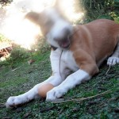
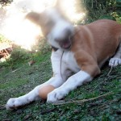
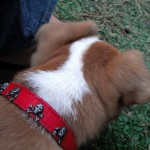
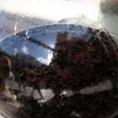
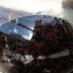

Territoriality
Proud Puppy Daddy Moment and Oh, How Things Have Changed Moment:
Roxy runs past cats on couch, snuggled up to each other (!), to bark at neighbourhood invader cat on back wall.
Ah, sweet.

Proud Puppy Daddy Moment and Oh, How Things Have Changed Moment:
Roxy runs past cats on couch, snuggled up to each other (!), to bark at neighbourhood invader cat on back wall.
Ah, sweet.

Puppy Class last week went much better.
For the humans and Roxy!
She still went crazy-play-time with the other dogs (especially a little Miniature Terrier called Knoffel, who Jo snapped a pic of – must remember to grab it. They is bestest fwiends), but she did much better in terms of concentration for the training stuff.
It was kewl!
Proud puppy parents, we were :).
By which I mean: Stay, do some stuff, Unstay.
And: Leave it, do some stuff, Unleaveit.
Not so easy! But she’s getting good at it.
Leave it is still her favourite game.
Favourite variation: Leave It, Down (tentatively), Come (excitedly), OK.
Aside: some of the books recommend praising a good obey with Good + Name of Command.
“Good Come” will never get old :).
Her bed.
And destroying it.
As of a few minutes ago, there is just a mess of material where once there was a comfy bed.
She hasn’t (touch wood!) chowed up anything else, though. At all. Is odd.
We’re doing pretty regular walkies in Newlands now.
Catch us LIVE early Saturday mornings!
Ahem.
Here’s a pic of Roxy being unsure of forest stream stuff:

Apologies for the general recent lack of photos.
She’s pretty active, and here are representative samples of what lots of the pictures on camera look like:


Puppy class was cancelled yesterday since most people are off on holiday for the long weekend.
We are okay with that.
Ahem.
Yesterday, a new treat was tried: a boiled egg.
She lurved it.
 

Still some good oneuponedownmanship:

There’s a slight general leaning to left on both, like she’s standing in front a wind turbine.
Up until now, the kennel had been next to the bed.
As a sort of security blanket kind of thing.
Yesterday we moved it into the corner of the room and threw in some treats (biltong and stuff) to ease the transition.
I’m not sure she noticed.

One “trick” that she’s pretty good at it is Leave It.
Immediately after she learnt it, and we started putting it on the ground, she would jump back a little. Like she had to back up a bit so she wouldn’t be tempted.
Now she stays still, and we can walk around the house, and she’ll leave it.
The reason I mention it is because we’re being sneaky and using it to help other stuff.
She doesn’t like eating from her bowl.
Every morning and evening we train her with her food, and when she seems to have reached her limit for the day, we put the rest in the bowl.
She would look at it slightly confused / disturbed, and trot off. If we put it on the floor, next to the bowl, she would hoover it up.
So, new plan, working so far, is to put the bowl down and tell her to Leave It. Then when you release her with “OK” she trots up to the bowl and commences noshing.
Huzzah!
Newlands.
A land of… land. And Newness.
And a forest where people like to walk their doggies a lot.
Now including us!


All the people and most of the dogs like Roxy lotsly. Yay!
She also had a trip to Starke Ayres garden centre where she was adored by all. 
I will make a terrible, boastful, human-parent…
She has slightly more than doubled in size since we got her.
Crikey!
The terrible twos, as they call it for humans, are on us.
She’s starting to be naughty and misbehave a bit.
On the other hand, we took her to House of Lawful Good & Evil last night for our traditional Sunday shenanigans, and Jo and I did a full training session with her in the house. Yay!
And, once we got her an old towel to sleep on, she collapsed asleep for a few hours. Yay!
She has an awesome new collar:

Just in time for Talk Like A Pirate Day!
Fair, but must try harder.

Both cats are standing up to Roxy more (which good because she’s about to outsize them). The don’t run way much – they sit and stare and punch as necessary.
Um, not so good. For me. Quite tired.
At the moment we’re getting up in the middle of the night, then again at about 6.
Roxy’s quite good at crawling back into her bed, though. We get up at 6.30, but she’s happy to snooze that little section between 6ish and 6.30(ish!).
Our big challenges / missions at the moment are crate training (going quite well! She only whines for a little while, then settles down very comfortably.), leash training (also going quite well. She doesn’t mind the leash. She does enjoy walkies.  ), and outside training (Umm… She’s very well behaved inside, but the outside is very, very, exciting. She gets distracted. So each day we’re doing some inside training, then some deck training, working up to garden training).
), and outside training (Umm… She’s very well behaved inside, but the outside is very, very, exciting. She gets distracted. So each day we’re doing some inside training, then some deck training, working up to garden training).
We went for a walk in Newlands Forest today. Without Roxy, alas – final injections due next week. Dog walking there is going to be awesome! We already enjoy walking there, but going with a doggy (like just about everyone else there) will be extra awesome.
Re-appropriation of the cat toy know as The Fillet (apologies for Flash, it was very dark):

Dog, cat, deck interaction | reflected dog, cat, human action | headshot, jaunty angle
 

Thangs Roxy Lurve #2: Rose Beetles (she loves them, yeah, yeah, yeah).

Roxy posing while Meep shows her disapproval by frying in the sun:

And last, but by no means least: the perfect object. No other objects need ever be made again. A rubber chicken (that squawks on squeezing) in a pirate costume (including eyepatch and wooden leg!). ZOMGBBQ! Ahem.

We found it at the Milnerton Flea Market yesterday. Award yourself five bonus points if you guessed that.
First in an ongoing series: Thangs Roxy Lurve.
In other news: she’s biting my feet less, which is good.
Still chewing my trousers a bit, though.
Arf!


{kind=link}
{kind=link}
{kind=link}
{kind=link}
{kind=link}
{kind=link}